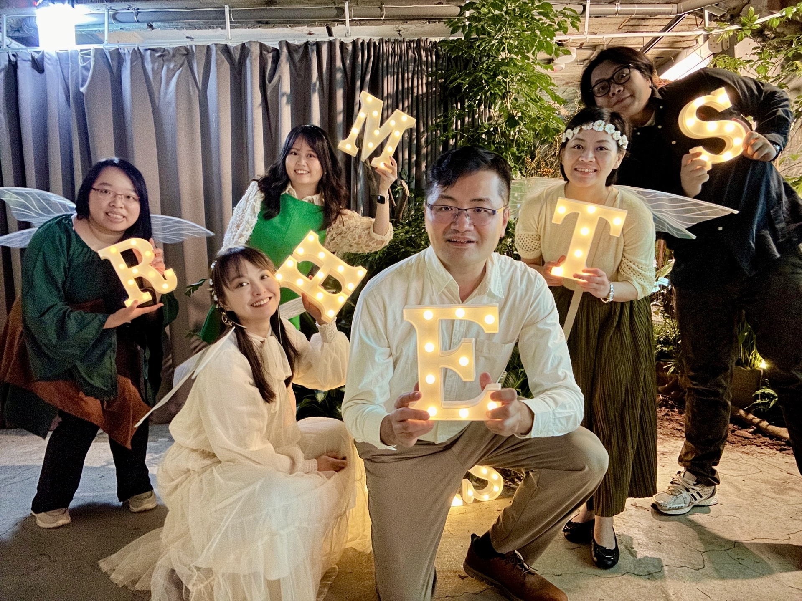
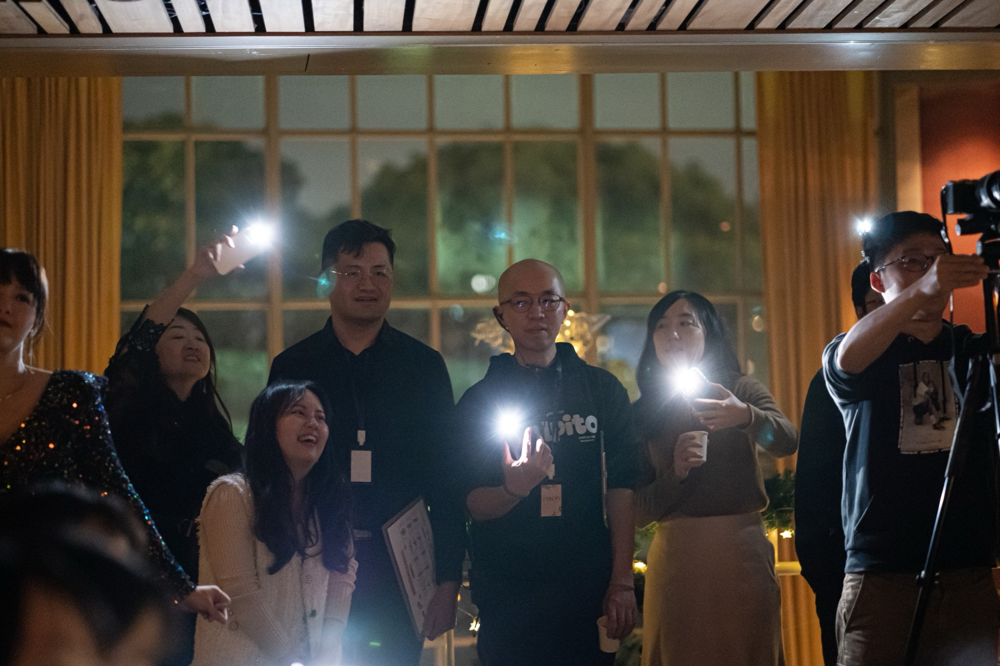
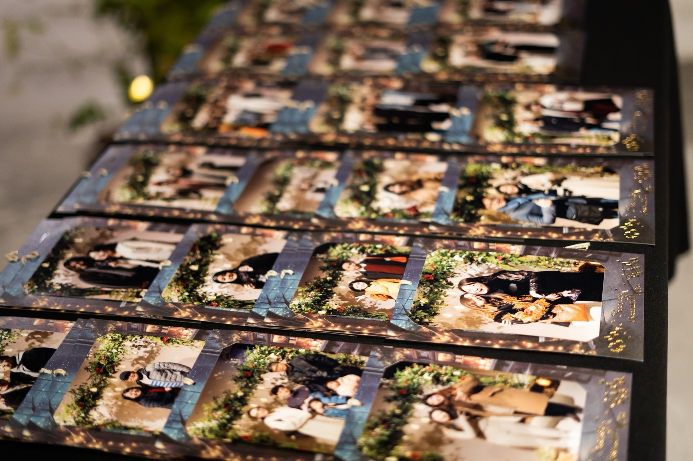
For us, every event is a fresh opportunity to rediscover creativity.
Every time we organize our Christmas event, we rethink from the start: what do people's hearts truly need?
From the theme and flow to every last detail, we redesign and craft with care — not to show off, but so that everyone who comes genuinely feels blessed and carries something meaningful away with them.
2025 | "Unboxing Relationships: Discovering the Hidden Treasures Within"
An interactive experience centered on the theme of "relationships." Through designed activities and guided conversations, participants are invited to reflect on their own relational patterns and expectations — and to open up new possibilities for connection with the person they came with.
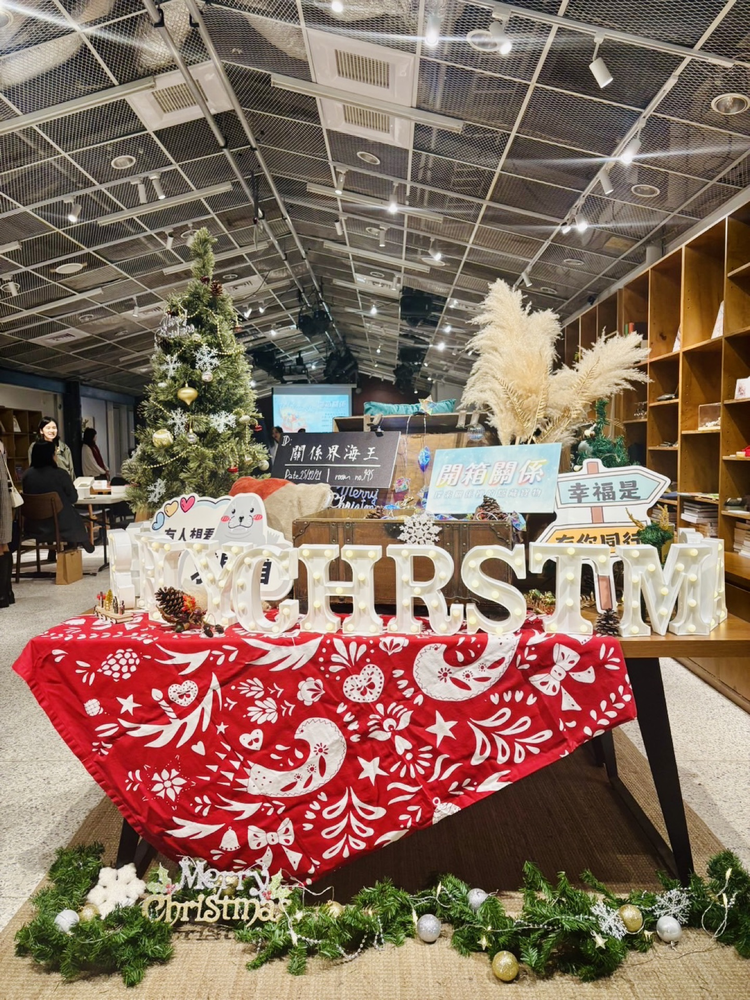
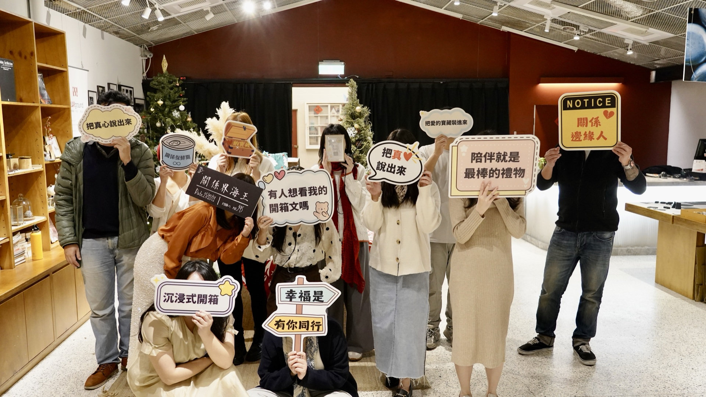
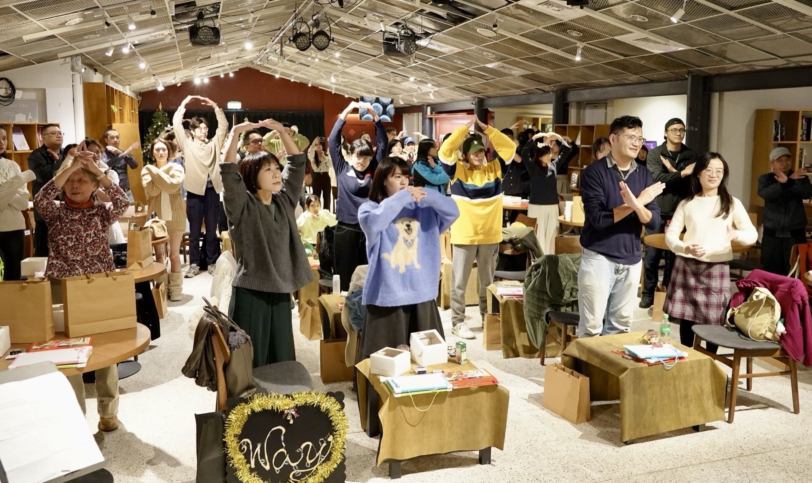
2024 | "Forest of Light" Immersive Experience
A forest space filled with symbols and stories, combining music, characters, and exploration missions. Participants were guided to look back over a decade of their life journey, process what's within, and rediscover direction and hope for the future along the way.
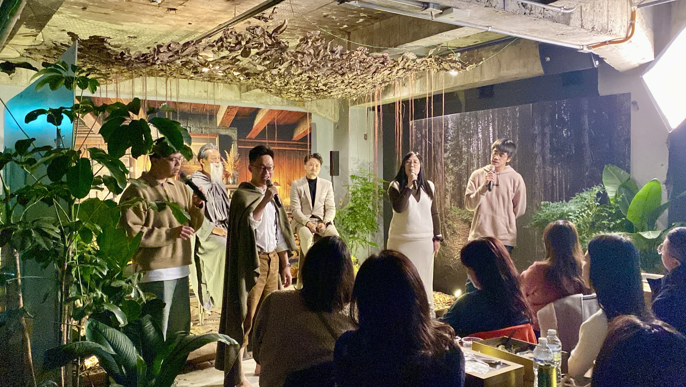
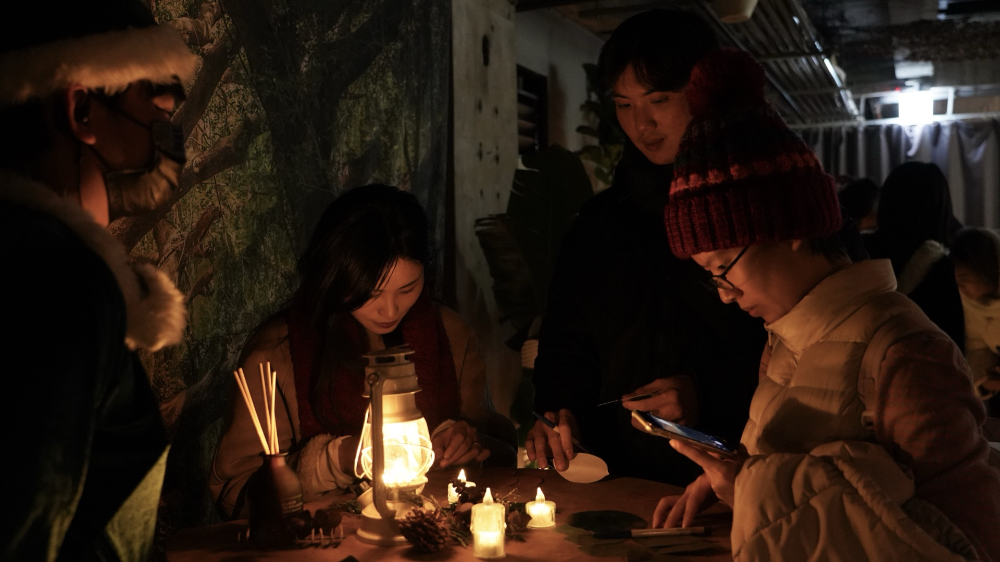
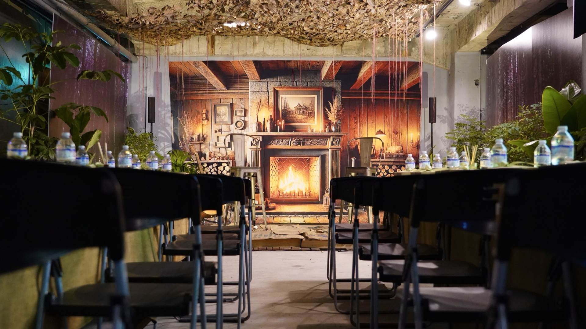
2022 | "The Music Story Bookshop" Immersive Experience
A story space styled as a bookshop, blending original music, atmospheric food, and immersive experience — inviting participants to step away from the noise and uncertainty of the outside world.
In a post-pandemic era full of uncertainty, three characters from different backgrounds guided participants to pause, reflect, and slowly find life's direction and answers through the journey.
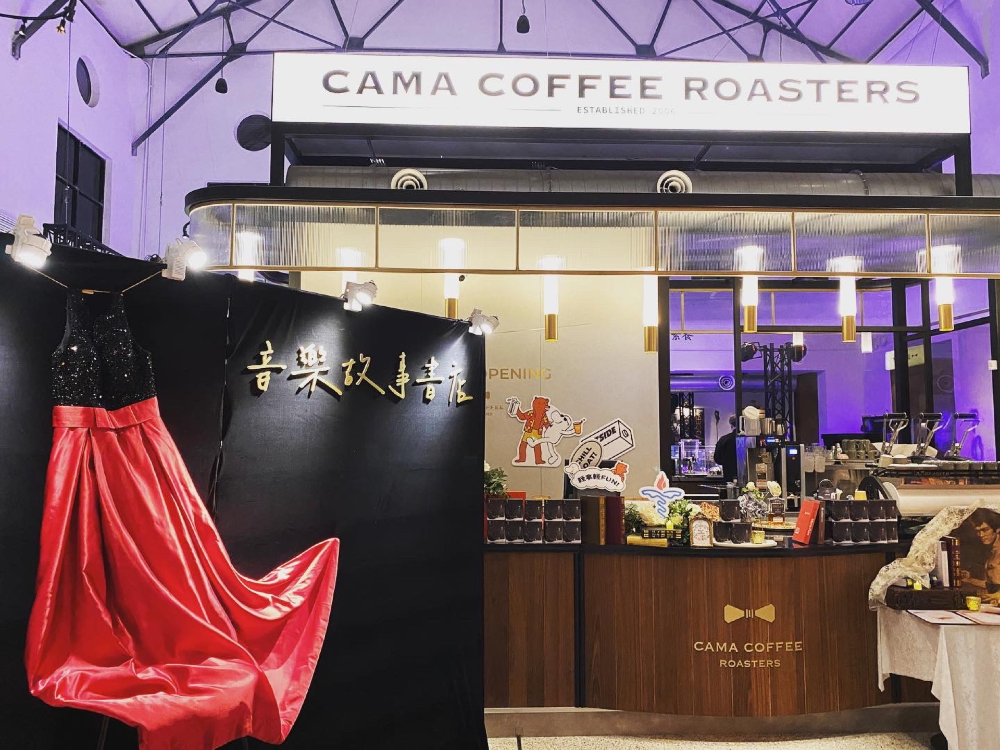
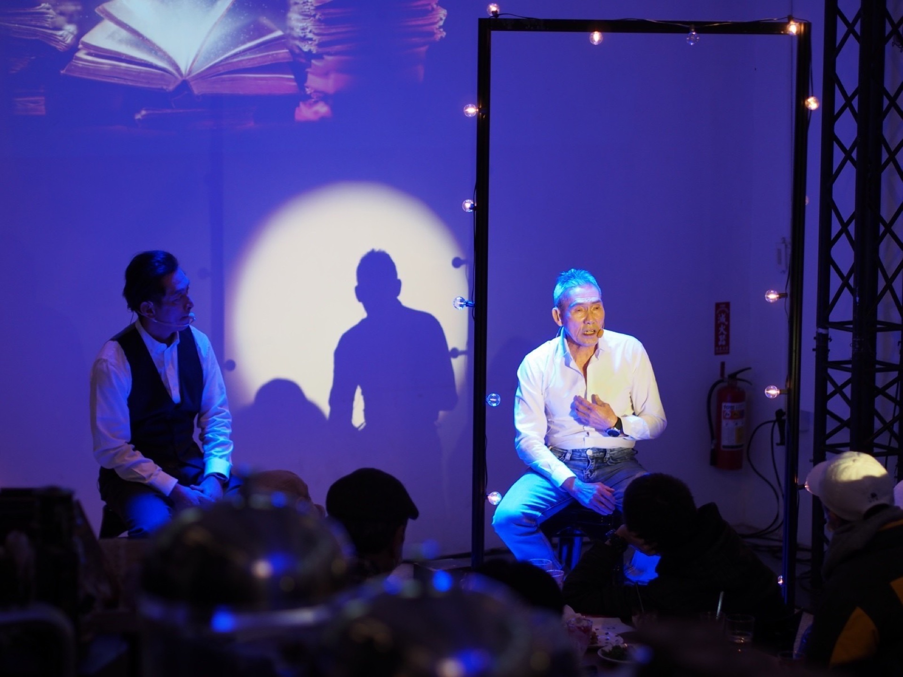
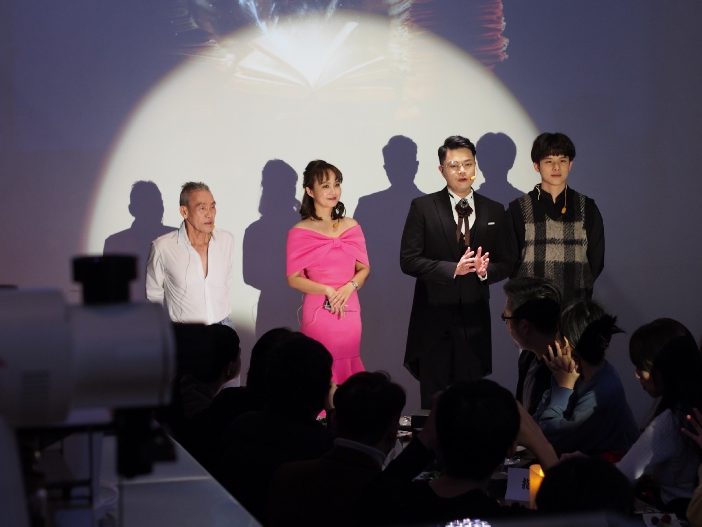
2021 | "Modern Taipei Mystery" Mobile Puzzle Game
Created in partnership with Joyful Bang during the pandemic, this mobile puzzle game combined phone-based teamwork, mystery reasoning, and physical props to transport participants back to 1920s Dadaocheng — gathering clues, solving mysteries, and making pivotal choices.
Through roleplay and teamwork, participants didn't just solve puzzles — they began to reflect on relational dynamics and life decisions, learning to live with impact in a changing world.
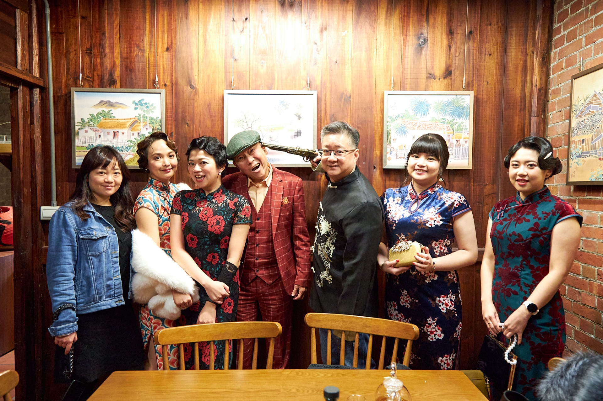
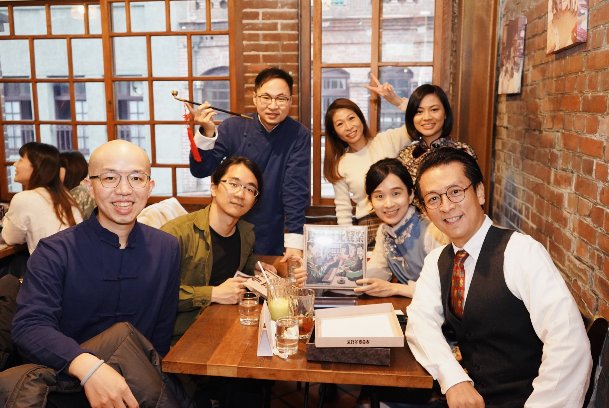
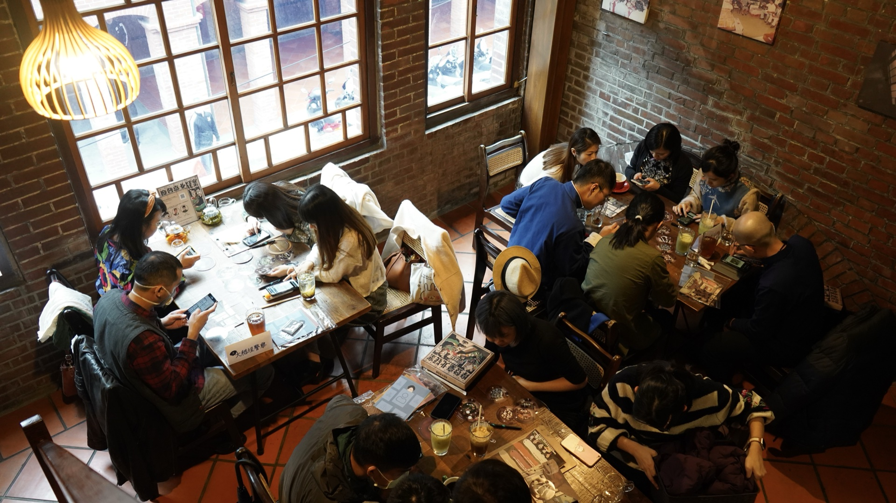